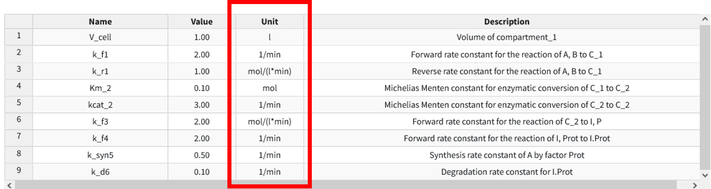
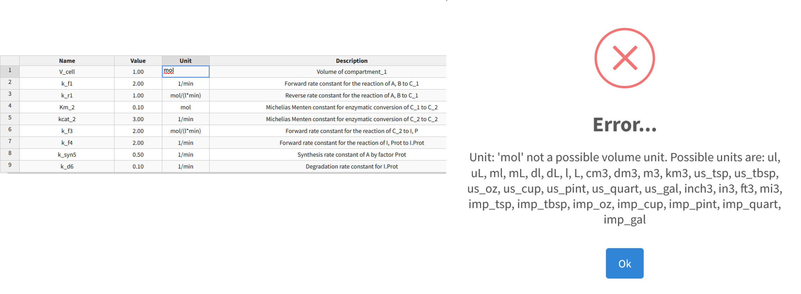

Units
BioModME supports basic units for species and parameters in a model. The unit definition system is created from the R package “measurements” (https://cran.r-project.org/web/packages/measurements/measurements.pdf). This package supports a number of commonly found units. The user can define the units how they want and the application will convert them to a base unit in the backend for processing.
Unit Converion
To convert units, simple go to the units section of the datatable for the variable. For example, we will look at a parameter table example. The third column in the table is units. By clicking the units square, we can change the unit type.

The program will only allow you to convert to accepted units for that type. Meaning, for example, V_cell has the units of litters, so it can only be changed to another unit of volume (such as mL). For a list of all units and their values, see the unit definition section. If you attempt to convert to a unit that is not allowed, a warning will appear.

Converting Compound Units
Often parameter values will have multiple unit definitions. From the parameter table example above, the parameter “k_r1” has a unit definition of mol/(l*min). This has units of count, volume, and time. To convert this, the user needs to ensure they repeat the whole expression changing the appropriate unit in the proper place. For example,
is an appropriate expression. However,
will return an error. As well as not putting the mathmatical notion back in its correct place (the division, multiplication, and parenthesis) or having any of the units not be the correct conversion type (i.e using volume units when you should be using temp).
Unit Definitions
Below are the unit definitions used in this application. The left hand side is the term that can be put into the application (parenthisis terms are alternat acceptable names) while the right side are the definition of the unit abbreviation.
Count
- fmol
femto-mol
- pmol
pico-mol
- nmol
nano-mol
- umol
micro-mol
- mmol
milli-mol
- mol
mol
Flow
- ml_per_sec
milliliter per second
- ml_per_min
milliliter per min
- ml_per_hr
milliliter per hour
- l_per_sec (LPS)
liter per second
- l_per_min (LPM)
liter per min
- l_per_hr (LPH)
liter per hour
Temperature
- C
Celsius
- F
Fahrenheit
- K
Kelvin
- R
Rankine
Time
- nsec
nano-second
- usec
micro-second
- msec
milli-second
- sec
second
- min
minute
- hr
hour
- day
day
- wk
week
- mon
month
- yr
year
- dec
decade
- cen
century
Volume
- ul (uL)
micro-Liter
- ml (mL)
milli-Liter
- dl (dL)
deci-Liter
- l (L)
Liter
- us_tsp
US teaspoon
- us_tbsp
US tablespoon
- us_oz
US ounce
- us_cup
US cup
- us_pint
US pint
- us_quart
US quart
- us_gal
US gallon
- cm3
centimeter cubed
- dm3
decimeter cubed
- m3
meter cubed
- km3
kilometer cubed
- in3
inch cubed
- ft3
feet cubed